Photo Gallery
Debate
This page records my debate experiences through photos, captions, and short reflections.
← Back to Clubs
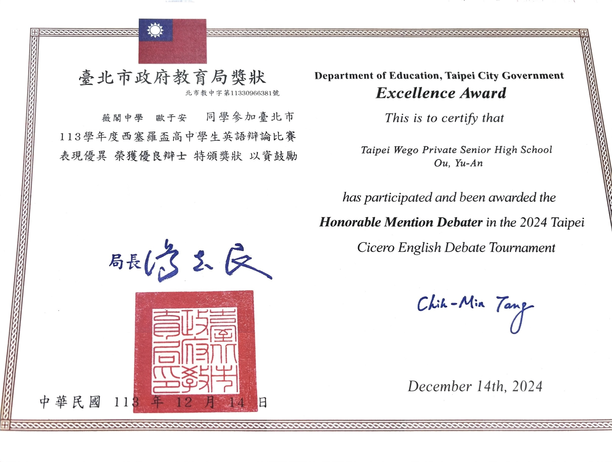
2024 Cicero Debate Honorable Mention
After three months of training in the Cicero Debate club, I was selected Honorable Mentioned debater at the tournament.
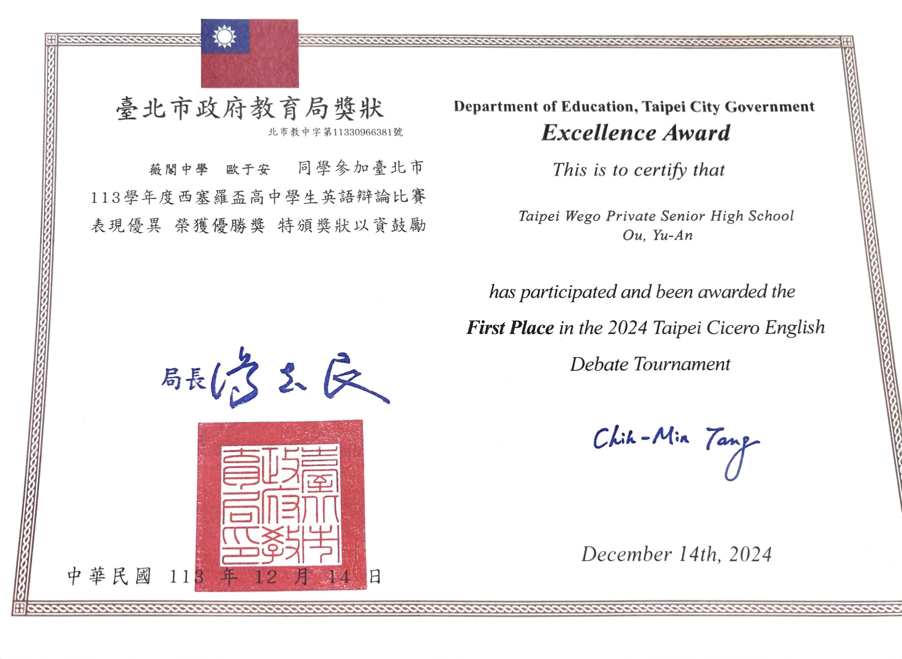
2024 Cicero Debate First Place
Our team was one of the National Winning Team out of 24 teams from 18 schools.
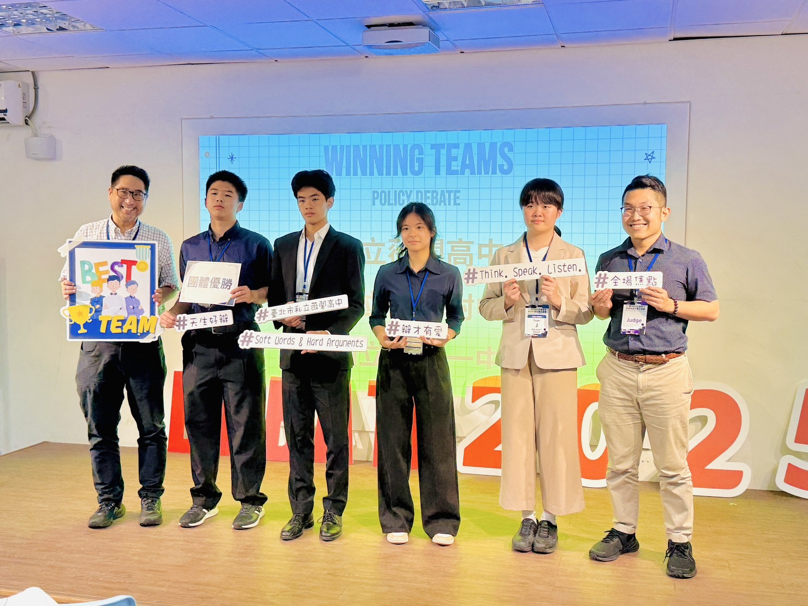
2025 NTNU POlicy Debate National Winning Team
After winning the regional round, our team was one of the Winning teams at the National round out of 24 teams.
Photo Gallery
Taiwanese Economics Olympiad
This page records my learning, competition, and academic growth in the Taiwan Economics Olympiad.
← Back to Academic Awards
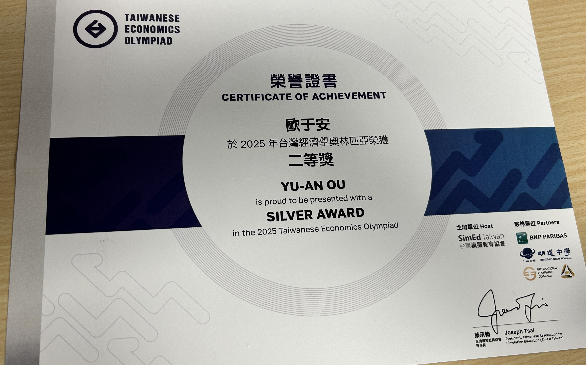
2025 Silver Award Certificate
After self-studying economics for four months, I ranked #9 in the 2025 Taiwanese Economics Olympiad.
This experience sparked my interest in economics, and I committed to it long-term.
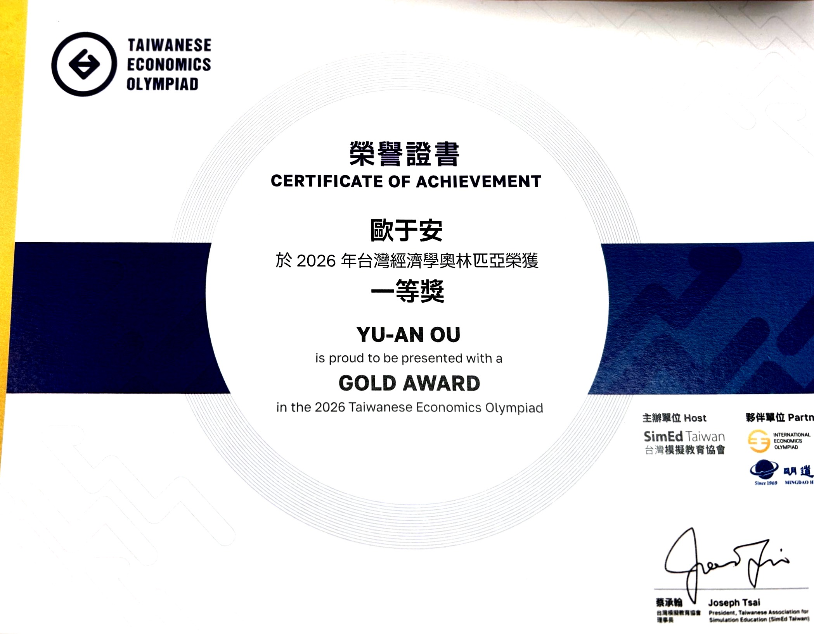
2026 Gold Award Certificate
I received a Gold Award in the 2026 Taiwanese Economics Olympiad, ranked #1 and qualified to the 2026 International Economics Olympiad.
This certificate represents one of my most meaningful academic experiences in economics.
Photo Gallery
TEDxYouth Event Planning
In 2025 and 2026, as our school's TEDx club president, I led a team of 40 students to host a licensed TEDx event at our school with 40+ listeners.
← Back to Clubs
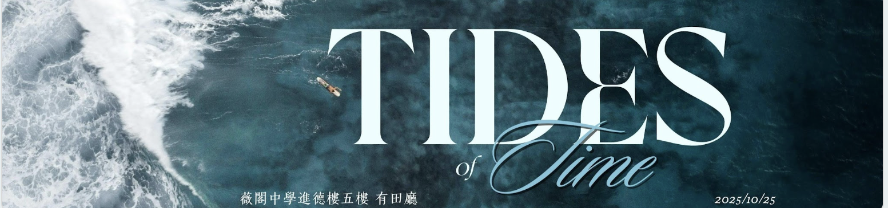
TEDxWego 2025
The 2025 event "Tides of Time" discusses how to balance work and emotions as well as dream and life.
After all, as time goes on, we are given different responsibilities.

TEDxWego 2025 Speakers
One of the seven speakers, photographer Karren Kao, shared how she finds her passion in photography after graduating from medical school
and how she guides herself through professional photography.
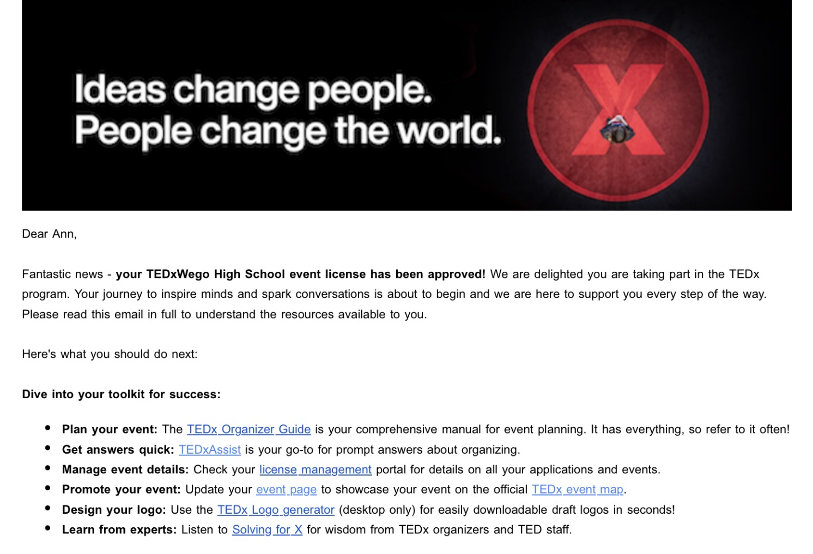
Official License
As the 2025-2026 club president, I led a group of 40 students to host the 2026 TEDxWego event.
We have received our official license from TED.
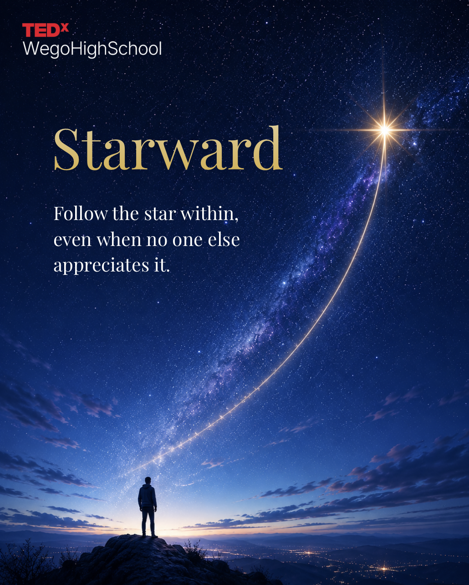
TEDxWego 2026 Planning
The 2026 event "Starward" discusses how to embrace changes in all stages of our lives
and not to fear unconventional paths in pursuit of our goals.
Photo Gallery
Policy Forum
This page records my policy forum experience, including public issue discussions,
proposal development, and youth participation.
← Back to Community
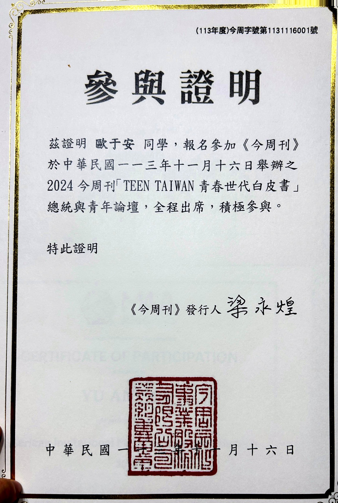
Public engagement
Write a caption about this policy forum moment. You can explain the issue being discussed,
your role, or the proposal your team worked on.
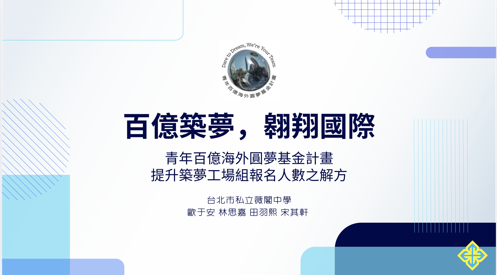
Policy Proposal
In 2025, our team sent a proposal to the forum.
We proposed a mentor-support system for Taiwan Global Pathfinders, helping students turn overseas dreams into structured, feasible plans and make better use of government funding.
BusinessToday Journal stated that our proposal was forwarded to government agencies.
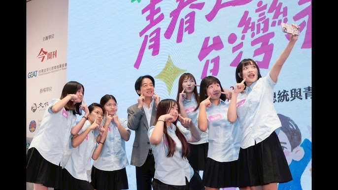
Proposal Presentations
120+ students from 30+ schools joined the 2025 Teen Taiwan President and Youth Forum.
Students can take photos and interact directly with President Lai Ching-te.
Photo Gallery
Go (Weiqi)
This page records my focus, strategic thinking development, and milestones in Go.
← Back to Clubs
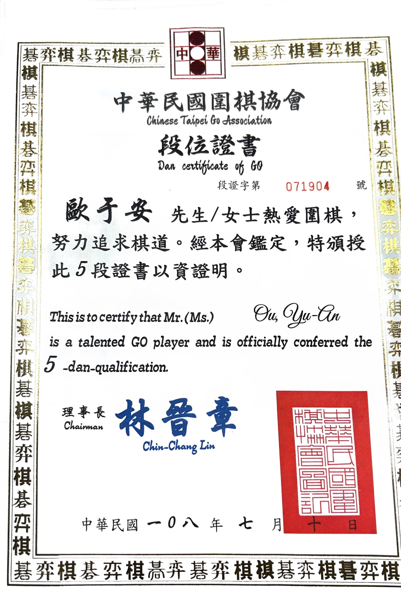
Go 5-dan Certificate
I reached 5-dan after years of competiting in competitions with 200+ participants.
During high school, I continued to paly Go online and joined more tournaments.